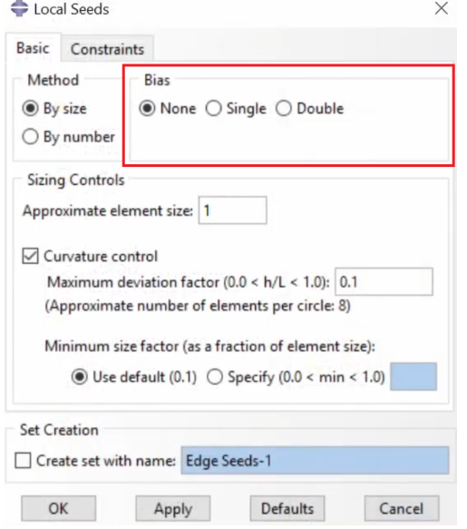

Abaqus FAQ
Welcome to the Abaqus Forum! Here, we address common challenges and troubleshooting issues encountered when using Abaqus. Click on "View the Answer" to reveal solutions.
A: The error message "Time increment required is less than the minimum specified" is commonly linked to numerical instability when refining the mesh. Here are some adjustments you can make:
- Ensure that the damage evolution parameters (linear/tabular) are updated to be consistent with the refined mesh. The damage variable should be adjusted based on element size.
- Check the aspect ratio of your elements. Elements with a high aspect ratio can lead to instability. Aim for a ratio close to 1 and use structured meshing where possible.
- Try reducing the element size gradually rather than making drastic changes in one step.
- Consider using automatic stabilization or adjusting the time increment controls under the step settings.
A: This error in Abaqus/CAE occurs when there is no valid step data in the results database (.odb file).
- Check the Job Monitor to confirm that the analysis completed successfully. If the job is still running, wait for it to finish, then close and reopen the .odb file.
- If the analysis failed or was interrupted, review the model for errors and try rerunning the simulation.
A: This partition line (highlighted with red above) is useful for a few reasons:

- It provides us a convenient path for stress analysis. As stated in the handout, you need to analyse the stresses along three lines (0, 45, and 90 degrees). By placing a partition line at 45 degrees, we ensure that the element nodes will be placed along this 45 degree line, allowing you to get the stresses along this line more easily.
- It helps with meshing. We expect the stress distribution to undergo sharp changes near the hole, so we'll need a higher mesh density near the hole. Far away from the hole, the change in stress won't be as siginificant, so we can use a lower mesh density. To do this, you can use the edge seeding option in Abaqus:
And then define your bias (ratio of the largest element to the smallest element along an edge):
A:
Geometry Model Setup:
- Ensure the correct modeling space is selected (e.g., 2D Plane Stress or 3D Space).
- For thin plate problems, typically use the 2D Plane Stress assumption.
- Create basic geometric shapes such as rectangles and circles.
- Use partitioning tools (e.g., Auto-Trim) to simplify the model.
Boundary Condition Setup:
- Use symmetry boundary conditions (e.g., XSYMM and YSYMM) to reduce computational effort, based on the symmetry of the problem.
- Ensure boundary conditions align with actual physical constraints, such as fixing certain edges or applying symmetry constraints.
The CPS4R element (4-node bilinear quadrilateral with reduced integration) is a suitable choice for modeling thin specimens in a uniaxial tensile test simulation for the following reasons:
- Quadrilateral Elements: Quadrilateral elements provide greater accuracy compared to triangular elements, especially in capturing stress and strain distributions in thin specimens. They are better suited for modeling plane stress conditions, where the out-of-plane stress is negligible.
- Reduced Integration: Reduced integration improves computational efficiency by reducing the number of integration points, which decreases the computational cost. It also helps prevent numerical locking, a common issue in fully integrated elements that can lead to overly stiff behavior.
- Balance of Accuracy and Efficiency: The CPS4R element strikes an optimal balance between accuracy and computational efficiency, making it ideal for simulating the stress-strain response of thin specimens under tensile loading.
From a theoretical perspective, fracture strain corresponds to the point of complete material failure, where stress drops to zero. However, in ABAQUS, the fracture strain input for ductile damage modeling represents the initiation of damage rather than complete failure.
- This is typically associated with the plastic necking strain, marking the onset of significant material softening. To accurately model the full fracture process, ABAQUS requires the definition of both damage initiation and evolution criteria.
- While 0.0163 may be appropriate for capturing the onset of damage, proper specification of the damage evolution parameters is essential to accurately represent the complete fracture behavior of the material.
A: This error is typically related to numerical instability. Here are some steps to resolve it:
- Adjust Time Step: Modify the time step control parameters, such as reducing the minimum time increment or enabling automatic time stepping.
- Check Material Model: Ensure that the material model and damage evolution parameters are consistent with the mesh refinement. If the material parameters are not adjusted after mesh refinement, it may lead to numerical instability.
- Mesh Quality: Check the mesh quality and ensure that the aspect ratio of the elements is close to 1. Avoid elements with high aspect ratios, as they can cause computational instability.